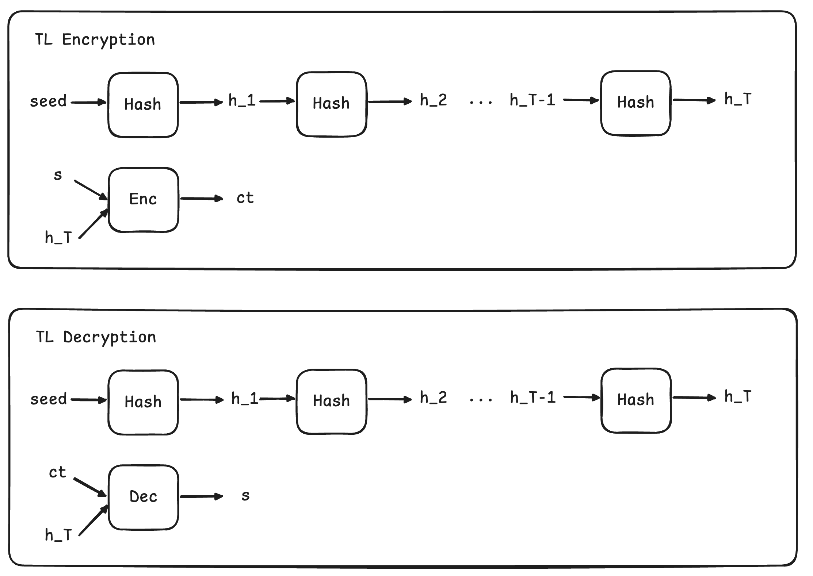
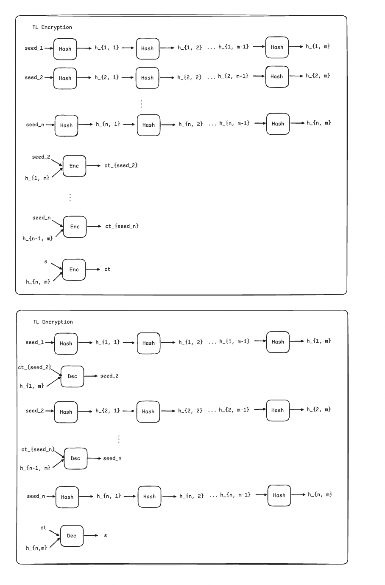

Revocable time-lock encryption
Gwern motivates his article on time-lock encryption with the following argument:
Julian Assange & Wikileaks made headlines in 2010 when they released an "insurance file", a 1.4GB AES-256-encrypted file available through BitTorrent. It's generally assumed that copies of the encryption key have been left with Wikileaks supporters who will, in the appropriate contingency like Assange being assassinated, leak the key online to the thousands of downloaders of the insurance file, who will then read and publicize whatever contents as in it (speculated to be additional US documents Manning gave Wikileaks); this way, if the worst happens and Wikileaks cannot afford to keep digesting the files to eventually release them at its leisure in the way it calculates will have the most impact, the files will still be released and someone will be very unhappy. Of course, this is an all-or-nothing strategy. WikiLeaks has no guarantees that the file will not be released prematurely, nor guarantees that it will eventually be released. Any one of those WikiLeaks supporters could become disaffected and leak the key at any time—or if there's only 1 supporter, they might lose the key to a glitch or become disaffected in the opposite direction and refuse to transmit the key to anyone. (Hope Wikileaks kept backups of the key!) If one trusts the person with the key absolutely, that's fine. But wouldn't it be nice if one didn't have to trust another person like that? Cryptography does really well at eliminating the need to trust others, so maybe there're better schemes. Now, it's hard to imagine how some abstract math could observe an assassination and decrypt embarrassing files. Perhaps a different question could be answered—can you design an encryption scheme which requires no trusted parties but can only be broken after a certain date?
We first provide a solution to this question, then pose a follow-up question:
What if, after having encrypted the file under such a scheme, the encryptor changes their mind and decides to revoke the permission to access the file after a certain date?
Standard time-lock encryption
The solution proposed by Gwern is to rely on time-lock encryption. Time-lock encryption allows to take a secret file $s$, set a time $T$, and obtain a ciphertext $ct$. Once time $T$ has elapsed, any external party can decrypt $ct$ and obtain $s$. More importantly, the decryption can be carried out without any interaction at all with the encryptor, who might have disappeared in the meantime. Such a solution allows for the removal on any trusted parties. The security of time-lock encryption guarantees that the secret file cannot be accessed before $T$. Furthermore, there's no risk that the file won't be released at all.
We start by describing the "standard" way of building time-lock encryption relying on sequential computation. For this, let's use the dummy example of hashes described in the Gwern's article.
The encryptor samples a random seed $r$, hashes it to obtain $h_1$, then hashes $h_1$ to obtain $h_2$, and performs such a sequence of hash operations that takes $T$ time (assuming that each hash takes a single unit of time to be computed). Eventually, the scientist obtains $h_T$ and uses this as a symmetric key to encrypt $s$ and obtain $ct$.
The scientist publishes $r$ and $ct$. Any external party can start from the random seed and perform the same operation that the scientist did to eventually obtain $h_T$ and use it decrypt $ct$ and access the time-locked secret $s$.

The sequential nature of the hashing operation makes it impossible for any adversary to obtain the secret in fewer than $T$ hashing operations. Crucially, the adversary cannot throw additional resources to speed up the decryption process because hashing is inherently sequential. Citing the foundational paper by Rivest et al., performing the decryption should be like having a baby: two women can't have a baby in 4.5 months. Naturally, one must take into account that an adversary might optimize the time it takes to perform a single hashing and therefore have access to the secret before it is established by the encryptor. Nevertheless, if we use SHA256, we can assume that highly optimized implementations have already been created and put into mass production as ASICs, which have been hand-optimized down to the minimal number of gates possible, therefore providing a lower bound for the time it takes to perform a single hashing.
A bigger problem stems from the encryption time. As of now, an encryptor needs to perform a long sequence of hashing to perform the encryption that would take $T$ time. Ideally, we want the encryption algorithm to be much shorter than $T$. Gwern proposes using chained hashes to achieve this. The intuition is that the encryptor (but not the decryptor!) can perform the hashing in a somewhat parallel manner.
More specifically, the scientist can sample $n$ seeds and, for each of them, perform a sequence of hashing for a period $m =\frac{T}{n}$. Then, they set up a chain between the $n$ results such that the final hash of seed 1 is used as a key to encrypt seed 2, the final hash of which was the encryption for seed 3, and so on. And the final hash of the chain is used to encrypt the secret $s$. The scientist will release to the public the first seed, the $ n-1$ encrypted seeds, and the final ciphertext. Assuming that the $T$ is equal to 30 days and the scientist has access to $n=30$ CPUs, the whole encryption process can be performed in a single day.

It's worth mentioning that this scheme, based on a chain of hashes, has never been formalized in academia. The most "popular" time-lock encryption schemes in academia relies on other kinds of sequential operations, such as repeated squaring modulo some integer $N$, which makes the encryption operation faster than in the case of the chain of hashes. Nevertheless, recent research proved that the latency of such an operation can be reduced using parallel computation, against the fundamental security assumption of the scheme.
There's still one problem with this solution. The parties interested in decrypting the ciphertext are forced to perform expensive computation, and they must start the process immediately once the ciphertext is published, otherwise the decryption will be delayed beyond the deadline set by the encryptor.
Time-lock encryption w/ witness encryption & Ethereum
The purpose of this scheme is to remove any resource constraints on parties interested in decrypting the ciphertext. A party should simply wait until the decryption deadline has passed and then be able to decrypt the ciphertext immediately with limited effort.
The original idea to mix witness encryption and a Bitcoin as a computation reference clock to obtain time-lock encryption is attributable to Liu et al.. We use Ethereum instead. The benefit of using a Turing-complete blockchain such as Ethereum will become apparent in the next paragraph.
The interface of witness encryption is relatively straightforward.
$$ \mathsf{WE.Enc}(x,s) \rightarrow ct $$ $$ \mathsf{WE.Dec}(ct,w)= \begin{cases} s & \text{if } w \text{ satisfies } x,\\ \bot & \text{otherwise}. \end{cases} $$
A secret $s$ is encrypted towards a statement $x$, such that any decryptor holding a valid witness $w$ for the statement $x$ can decrypt the ciphertext $ct$ and obtain the secret.
For our time-lock encryption, the statement can be expressed as block T has been mined on the Ethereum blockchain, and a valid witness $w$ can be obtained by everyone once block T is reached. More specifically, the witness can be expressed as an SNARK proof of consensus such that the set of designated Ethereum validators has signed a state for block $T'$ such that $T' = T$.
The security of the time-lock encryption scheme is inherited from the underlying blockchain. An attacker trying to obtain the secret $s$ earlier than intended must either (i) produce a valid witness for a statement that is still false on the canonical chain (which requires breaking WE soundness) or (ii) create a convincing fork of the canonical chain that makes the statement true. The latter is not possible unless they control a majority of the stake in the system. Goyal and Goyal provide a more comprehensive security analysis.
Revocable Time-lock encryption
We have been able to successfully answer the first question that was posed at the beginning of the article. But a problem remains: wait if the encryptor changes their mind?
Once the ciphertext has been published, the Rubicon has been crossed.
To enable revocation, we can play around with the expressibility that smart contracts on Ethereum give us and enrich the statement $x$ used for encryption. Suppose that the encryptor deploys a smart contract at address 0xaaa whose state is a single revocation bit that can be toggled on and off only by the encryptor. The encryptor can now encrypt their secret with witness encryption using the following as statement $x$:
block T has been mined on the Ethereum blockchain and, within that block, the revocation bit of contract 0xaaa is set to 0
Now the encryptor has all the freedom to change their mind from the moment of encryption until block T-1. Whenever they change their mind, they just need to toggle the revocation bit.
Conclusion
The concept that I just explained is mostly a toy example of what can be achieved when combining non-interactive cryptographic primitives such as witness encryption with variable and Turing-complete state transition machines such as Ethereum. There are plenty of other applications that can be enabled by this same interface, such as one-time programs, pay-per-use contracts, fair multi-party computation, and encrypting a message to the result of an EVM staticcall returning true
The unfortunate news is that WE is not practical today. But I invite you to a soon-to-be-published paper by Machina iO that outlines a roadmap to make this practical.